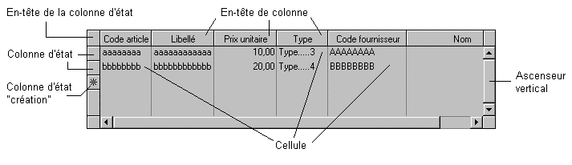

A l'occasion d'une saisie de masque (XmeInput), lorsque l'utilisateur clique sur certains éléments d'un tableau (Cf. schéma ci-après), le point d'arrêt paramétré dans Xwin pour ce tableau est exécuté. Son numéro est comme d'habitude rangé dans Harmony.Arret et la main est rendue au programme appelant. Celui-ci a alors accès aux renseignements suivants :
|
Harmony.Arret et |
Numéro du point d'arrêt "tableau". |
|
Harmony.TabClic |
Type d'événement souris produit (Cf. table détaillée des valeurs possibles ci-après). |
|
Harmony.SourisBout |
Bouton de la souris qui a été enfoncé (**) : |
|
Harmony.SourisClav |
Touche spéciale enfoncée en même temps que le clic (**) : |
|
Harmony.SourisClic |
Nombre de clics effectués (*) (**) : |
|
Harmony.SourisPage |
Numéro de la page Xwin contenant la donnée cliquée (***). |
|
Harmony.SourisSeq |
Numéro de point de séquence de la donnée cliquée (***). |
|
Harmony.SourisPosX |
Numéro de colonne concernée (LIST_CLICK_COLUMN_CONTROL, LIST_CLICK_ACTIVE_CELL et LIST_CLICK_DROP). |
|
Harmony.SourisPosY |
Numéro de ligne concernée (LIST_CLICK_ROW_CONTROL, LIST_CLICK_ACTIVE_CELL, LIST_CLICK_CREATE_CONTROL, LIST_CLICK_TREE_CONTROL et LIST_CLICK_DROP). |
|
Harmony.ScrollbarPositionNew |
Nouvelle position de l'ascenseur (LIST_CLICK_SCROLLBAR). |
|
Harmony.ScrollbarPositionOld |
Ancienne position de l'ascenseur (LIST_CLICK_SCROLLBAR). |
|
Harmony.DragXxxx |
Renseignements liés au drag and drop tableau (LIST_CLICK_DROP). |
(*) En cas de double clic, deux interruptions sont successivement générées : une première signalant le premier clic (Harmony.SourisClic = SIMPLE_CLICK), suivie d'une seconde signalant le double clic (Harmony.SourisClic = DOUBLE_CLICK). Dans le cas du XmeInput, la deuxième interruption ne sera générée qu'à condition que vous ayez demandé le retour à la saisie (par XmeNext) après le premier point d'arrêt.
(**) Uniquement pour les événements : LIST_CLICK_HEADING_CONTROL, LIST_CLICK_ROW_CONTROL, LIST_CLICK_COLUMN_CONTROL, LIST_CLICK_ACTIVE_CELL, LIST_CLICK_CREATE_CONTROL et LIST_CLICK_TREE_CONTROL.
(***) Uniquement pour l'événement LIST_CLICK_ACTIVE_CELL et si la cellule cliquée contient une donnée déclarée en saisie dans Xwin. En cas d'utilisation de pages panels, voir aussi la rubrique Numéros de page transmis dans l’enregistrement Harmony (pages panels).
Remarque : A l'occasion d'une saisie de ligne de tableau (XmeListInput), les événements souris concernant un tableau quelconque sont normalement ignorés. L'option "Arrêts en saisie de ligne : Autorisés" permet toutefois d'assouplir cette règle en rendant la main au programme appelant sur certains événements souris particuliers normalement ignorés. Pour plus de détails sur ce point, voir la fonction XmeListInput.
A l'occasion d'une consultation de masque (XmeConsult) ou de tableau (XmeListConsult), lorsque l'utilisateur clique dans un tableau, le programme récupère le contrôle (comme si une touche du clavier était tapée). Il n'y a pas de point d'arrêt à proprement parler (Harmony.Arret n'est pas positionné) mais les autres paramètres de sortie (Harmony.DataArret, Harmony.TabClic, etc.) sont garnis comme précédemment.
En particulier, Harmony.DataArret est chargé avec le numéro de point d'arrêt affecté au tableau dans Xwin et Harmony.TabClic est chargé avec le type de clic souris produit. Ces données peuvent donc être testées pour savoir si la sortie du XmeConsult ou du XmeListConsult a été provoquée par la frappe d'une touche (Harmony.DataArret = 0 et Harmony.TabClic = LIST_NO_MOUSE_ACTION) ou par un clic tableau (Harmony.DataArret = numéro de point d'arrêt tableau, Harmony.TabClic <> LIST_NO_MOUSE_ACTION et Harmony.Key = 0).

Table des événements souris (voir schéma ci-dessus) liés à l'objet tableau (valeurs de Harmony.TabClic) :
|
LIST_NO_MOUSE_ACTION |
Cette valeur signifie que l'interruption n'a pas été provoquée par une action souris sur le tableau. |
|
LIST_CLICK_HEADING_CONTROL |
Interruption due à un clic souris dans l'en-tête de la colonne d'état. |
|
LIST_CLICK_ROW_CONTROL |
Interruption due à un clic souris dans la colonne d'état. |
|
LIST_CLICK_COLUMN_CONTROL |
Interruption due à un clic souris dans un en-tête de colonne. |
|
LIST_CLICK_ACTIVE_CELL |
Interruption due à un clic souris dans une cellule valide (c'est à dire une colonne d'une ligne garnie). |
|
LIST_CLICK_SCROLLBAR |
Interruption due à une action souris sur l'ascenseur vertical :
La variable Harmony.ScrollbarClickBeginEnd permet de savoir si, après le déplacement, l'ascenseur se retrouve en position début ou fin :
|
|
LIST_CLICK_CREATE_CONTROL |
Interruption due à un clic souris dans la colonne d'état "création" (en regard de la première ligne vide marquée d'un plus) (hors mode "Licence consultation"). |
|
LIST_HEIGHT_CHANGING |
Interruption due à un changement du nombre de lignes affichées à l'écran (suite à une modification de la hauteur de la fenêtre ou à une modification de la hauteur des lignes du tableau). Une gestion standard de cet événement est assurée par XmeListConsultDefault. Pour plus de détails sur cet événement et sur les traitements à la charge du programme (en particulier lorsque plusieurs tableaux sont présents à l'écran), voir la rubrique Modification de la taille d'un tableau. |
|
LIST_CLICK_TREE_CONTROL |
Cf. rubrique Evénements souris liés à l'objet arbre. |
|
LIST_CLICK_DROP |
Interruption provoquée par une opération « Drop » effectuée par l’utilisateur à l’intérieur du tableau (Cf. rubrique « Drag and drop d'éléments de tableau »). |
(1) Le numéro de ligne rendu est un numéro de ligne à l'écran (exemple : si Harmony.SourisPosY vaut 4, cela signifie que le clic souris a eu lieu sur la quatrième ligne du tableau affichée à l'écran). La fonction XmeListGetOffset permet au besoin de connaître l'élément du tableau affiché en première ligne.
(2) Le numéro de colonne rendu est le numéro d'ordre de la colonne dans le tableau, l'ordre à considérer étant celui défini dans Xwin. Les numéros de colonne sont calculés à la compilation du masque : ils n'évoluent pas en exploitation, même si l'utilisateur intervertit des colonnes.
Exemple :
Fini = FALSE
DO
XmeListConsult (Ident) ;consultation
SWITCH Harmony.Key
CASE K_ESCAPE ;fin
Fini = TRUE
CASE Harmony.DataArret = xxx ;point d'arrêt tableau
SWITCH2 Harmony.TabClic ;test type de clic :
CASE LIST_CLICK_CREATE_CONTROL ;colonne d'état "création"
... ;traitement personnel
CASE LIST_CLICK_ROW_CONTROL ;colonne d'état
... ;traitement personnel
CASE LIST_CLICK_ACTIVE_CELL ;cellule active
... ;traitement personnel
CASE ... ;autre clic traité
... ;traitement personnel
DEFAULT ;autres clics
;traitement par défaut
XmeListConsultDefault (Ident, Ligne, ScrollBar32)
ENDSWITCH
CASE ... ;autre événement traité
... ;traitement personnel
DEFAULT ;autres événements
;traitement par défaut
XmeListConsultDefault (Ident, Ligne, ScrollBar32)
ENDSWITCH
WHILE Fini = FALSE
WEND